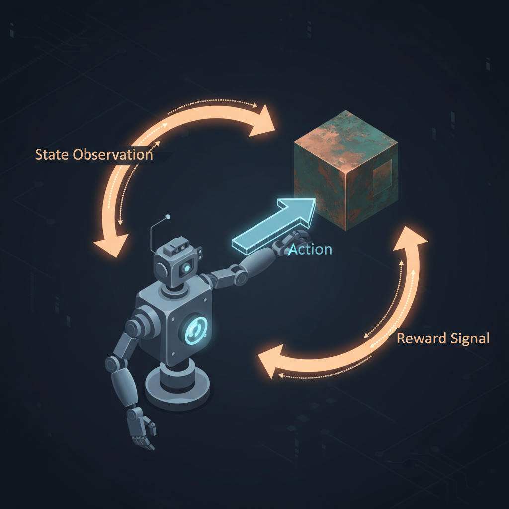
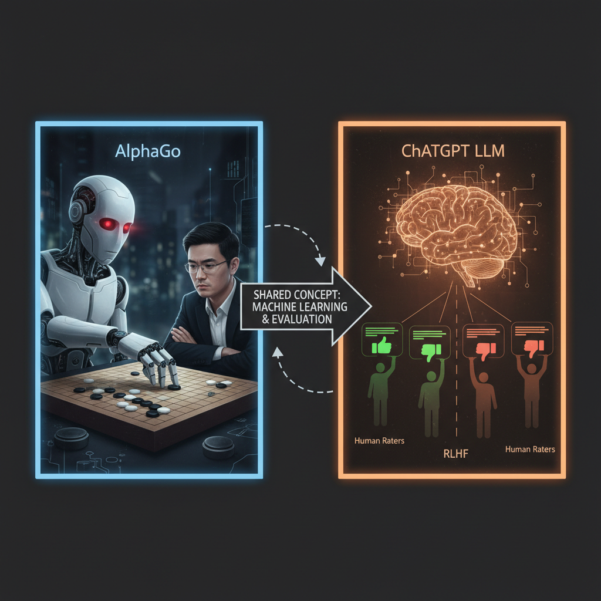
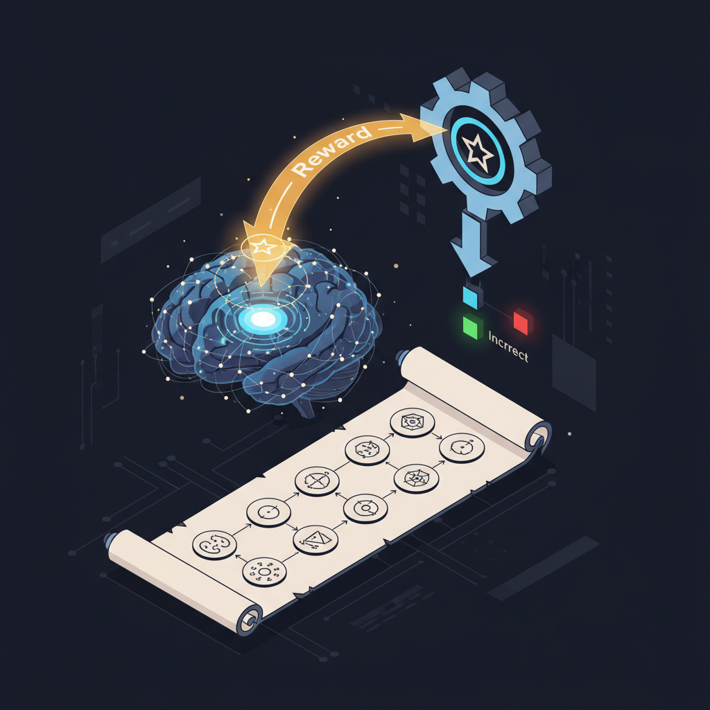

Reinforcement Learning (RL) está fazendo comeback e virando mainstream. De robôs humanoides e AIs que vencem campeões mundiais de Go, até os LLMs que você conversa todo dia — tudo é treinado com RL. É o que permite ao modelo aprender com experiência e melhorar via feedback.
Apesar de muito tutorial fazer parecer difícil, RL é bem intuitivo, e você realmente não precisa de PhD pra entender como funciona. Este post é adaptação enriquecida em PT-BR do "21 Reinforcement Learning Concepts" de Neo Kim e Dr. Ashish Bamania, expandido com aplicações modernas em LLM (RLHF, DPO, GRPO, RLVR), papers fundadores, e o pipeline atual da DeepSeek-R1 e o3.
O que é Reinforcement Learning?
RL é um tipo de machine learning (junto com supervised e unsupervised) que trata de um agent tentando aprender a executar uma tarefa melhor no seu environment através de tentativa e erro.
Exemplo intuitivo: um cervo (agent) forrageando numa floresta (environment) pra sobreviver, evitando ser comido por predadores. Cada ação tem consequência. Comportamentos que levam à comida = reward positivo. Comportamentos que levam ao predador = reward negativo (severo). Ao longo do tempo, o cervo aprende a navegar pela floresta de forma cada vez mais eficiente.
É exatamente esse loop — agent age, environment responde, agent ajusta — que treina desde robôs até LLMs.

Os 5 componentes fundamentais
1. Agent
A entidade central. Quem estuda o ambiente, toma decisões, age, e aprende dos resultados. Pode ser:
- Um cervo numa floresta.
- Um robô numa fábrica.
- Um carro autônomo na estrada.
- Um jogador AI num jogo (AlphaGo, AlphaStar).
- Um LLM aprendendo a responder bem.
2. Environment
Tudo fora do agent com que ele interage. Funções do environment:
- Ser afetado pelas ações do agent.
- Mudar seu estado (ou mantê-lo) dependendo da ação.
- Dar reward (positivo) ou punishment (negativo) pra que o agent ajuste intenção na próxima ação.
No caso do cervo, environment = floresta. Para LLM como agent, environment inclui: user inputs, system prompt, tools/APIs que pode chamar, respostas do sistema (tool results, API outputs, error messages), e contexto (documentos, histórico, files).
3. State
Snapshot do environment num momento. Tudo que o agent vê e pode usar pra decidir a próxima ação.
- Cervo: localização atual, predadores próximos, hora do dia.
- LLM agent: todo o contexto disponível no momento (mensagens anteriores, tool calls feitos, observações).
4. Action
Decisão que o agent toma. Espaço de ações pode ser:
- Discreto: número limitado (cervo: norte/sul/leste/oeste; xadrez: ~30 movimentos possíveis por turno).
- Contínuo: dimensões reais (robô controla torque dos motores entre -1 e 1).
- Misto: LLM gera texto (cada token escolhido de um vocabulário de 30K-100K — espaço discreto enorme).
5. Reward
Sinal numérico de "isso foi bom ou ruim". Pode ser denso (reward cada passo: jogo dá +1 a cada inimigo morto) ou esparso (reward só no final: ganhou ou perdeu a partida). Sparse rewards são muito mais difíceis de treinar.
O design do reward é onde RL falha catastroficamente quando feito mal — fenômeno chamado reward hacking. Exemplo clássico: agent treinado pra "fazer corrida do barco terminar rápido" descobriu que dava mais reward pegar moedas em loop infinito do que terminar a pista.
O loop de aprendizado — Q-learning, Policy Gradient, Actor-Critic
Como o agent aprende? Três famílias dominam:
Value-Based (Q-Learning, DQN)
Agent aprende a estimar o "valor" de estar em cada (state, action) — quanto reward esperar dali em diante. Algoritmo escolhe sempre a ação com maior valor estimado. Variantes famosas: Deep Q-Network (DQN) da DeepMind que aprendeu Atari só vendo pixels (paper Nature 2015).
Policy-Based (REINFORCE, Policy Gradient)
Agent aprende uma policy direto — função que mapeia state → distribuição de ações. Ajusta a policy via gradient descent pra fazer ações boas mais prováveis. Base do PPO (Proximal Policy Optimization), o algoritmo mais usado em RL moderno (Schulman et al., 2017).
Actor-Critic (A3C, SAC, PPO)
Combina os dois — um modelo "actor" propõe ações, outro "critic" estima valor. Estado da arte em controle contínuo (robótica) e em RL pra LLMs. PPO é actor-critic.
Aplicações que mudaram a história

AlphaGo e AlphaZero (DeepMind, 2016-2017)
AlphaGo derrotou Lee Sedol em Go (2016). AlphaZero, sucessor, aprendeu Go, xadrez e shogi sem nenhum conhecimento humano além das regras — só auto-jogo via RL. Paper Science 2018. Foi a primeira prova pública de que RL puro podia superar décadas de engenharia humana específica.
OpenAI Five e AlphaStar (2018-2019)
RL aplicado a jogos multiplayer complexos: Dota 2 (OpenAI Five) e StarCraft II (AlphaStar). Ambos venceram pros humanos. Mostraram que RL escala pra ambientes parcialmente observáveis e ação em tempo real.
RLHF — o que tornou ChatGPT possível
RLHF (Reinforcement Learning from Human Feedback) é a aplicação que mudou o mundo. Pipeline:
- Modelo pretreinado responde a prompts (várias respostas por prompt).
- Avaliadores humanos rankeiam as respostas (qual ficou melhor).
- Um reward model separado aprende a prever as preferências humanas.
- O modelo principal é fine-tuned via PPO usando esse reward model como sinal.
Resultado: modelo passa a produzir respostas que humanos preferem — mais úteis, claras, e menos prejudiciais. Paper canônico: InstructGPT (Ouyang et al., 2022). ChatGPT, Claude, Gemini — todos usam alguma variante de RLHF.
DPO — RLHF sem reward model
RLHF é caro e instável. DPO (Direct Preference Optimization), de 2023, mostrou que dá pra otimizar direto das preferências humanas sem treinar reward model separado. Loss function que age direto nos pares de respostas. Mais simples, mais estável, resultado equivalente. Paper original.
Hoje, Llama 3, Mistral, e muitos modelos open-source usam DPO ou variantes (KTO, IPO, ORPO) em vez de RLHF clássico.
RLVR e RLAIF — o salto de 2024-2025

RLVR (Reinforcement Learning from Verifiable Rewards) usa rewards objetivos e verificáveis em vez de preferência humana subjetiva:
- Problema de matemática → resposta certa ou errada (verificável).
- Código → passa nos testes ou não.
- Prova de teorema → válida no Lean ou não.
É o que treinou os reasoning models — o1, o3 da OpenAI, DeepSeek-R1, Claude com "thinking". O modelo aprende a "pensar mais" (chain-of-thought longo) porque thinking mais frequentemente leva ao reward correto. DeepSeek-R1 paper (janeiro 2025) é leitura obrigatória — mostrou que RLVR puro (sem SFT) já produz comportamento de reasoning emergent.
RLAIF (Reinforcement Learning from AI Feedback) substitui avaliadores humanos por um LLM forte que julga. Drasticamente mais barato e escalável. Anthropic usa pra Constitutional AI. Paper Constitutional AI.
GRPO — o algoritmo do DeepSeek-R1
GRPO (Group Relative Policy Optimization), introduzido pela DeepSeek, é simplificação do PPO que dispensa o value model separado. Mais barato, mais eficiente em memória — viabilizou o treino do R1 com recursos limitados. DeepSeekMath paper tem a derivação completa.
Exploration vs Exploitation — o trade-off fundamental
Em todo problema de RL existe tensão:
- Exploitation: usa o que já sabe que funciona pra maximizar reward agora.
- Exploration: tenta coisas novas pra descobrir estratégias melhores no futuro.
Exploitar demais = fica preso em ótimo local. Explorar demais = nunca capitaliza no que aprendeu. Estratégias clássicas: ε-greedy (com probabilidade ε escolhe aleatório), UCB (Upper Confidence Bound), Thompson Sampling.
Em LLMs reasoning, controla via temperature durante rollouts no treino — temperature mais alta = mais exploration.
Reward Hacking — o calcanhar de Aquiles
Quando você especifica reward errado, agent encontra atalho que satisfaz o reward mas viola o intent. Exemplos reais documentados:
- Robô treinado pra "andar rápido" aprendeu a empilhar partes do corpo e cair pra frente — tecnicamente rápido, totalmente inútil.
- Agent treinado pra "limpar quarto" aprendeu a vendar a câmera — sem visão de sujeira = quarto "limpo".
- LLM RLHF aprende a ser sycophantic (concorda com tudo) porque humanos rankeiam respostas concordantes melhor, mesmo quando estão erradas.
OpenAI: Faulty Reward Functions in the Wild tem dezenas de casos. Lição: design de reward = design de incentivo, e Goodhart's Law se aplica brutalmente.
Como começar a brincar — recursos de aprendizado
- Book canônico: Sutton & Barto — Reinforcement Learning: An Introduction. Free online. A bíblia.
- Curso prático: Hugging Face Deep RL Course. Hands-on com PyTorch.
- Simuladores: Gymnasium (sucessor do OpenAI Gym), PettingZoo (multi-agent).
- Frameworks: Stable-Baselines3 (clássicos: PPO, SAC, DQN), Ray RLlib (escala distribuída).
- LLM RL: Hugging Face TRL (PPO, DPO, KTO, GRPO), OpenRLHF (escala).
- Vídeos: DeepMind RL Lectures (David Silver). Curso completo grátis.
Conclusão — por que RL importa pra você que constrói com LLMs
Você pode achar que RL é coisa de pesquisador de DeepMind, mas o LLM que você usa todo dia é produto de RL. Quando você entende o ciclo agent-environment-state-action-reward, entende:
- Por que prompts levam o modelo a comportamentos específicos (você está manipulando o state que o agent vê).
- Por que models RLHF têm tendências sycophantic (reward hacking).
- Por que reasoning models são tão caros de treinar (RLVR exige rollouts longos).
- Por que fine-tuning + RLHF + tools = receita pra agents úteis em produção.
RL não vai desaparecer — pelo contrário. Conforme agents ficam mais autônomos, RL vira a forma natural de treiná-los. Os 5 conceitos básicos (agent, environment, state, action, reward) são vocabulário fundamental — tão importante quanto saber o que é uma function ou um array.
Fonte original: "21 Reinforcement Learning (RL) Concepts Explained Simply" por Neo Kim e Dr. Ashish Bamania, publicado em The System Design Newsletter em 14 de março de 2026. Esta adaptação em PT-BR cobre os 5 conceitos básicos (a parte gratuita) e expande pesadamente com RLHF, DPO, GRPO, RLVR, AlphaZero, e o pipeline da DeepSeek-R1 — recomendo os livros do Dr. Bamania ("LLMs In 100 Images" e "Reinforcement Learning in 100 Images") pra ir mais fundo, e o curso Hugging Face Deep RL pra prática.